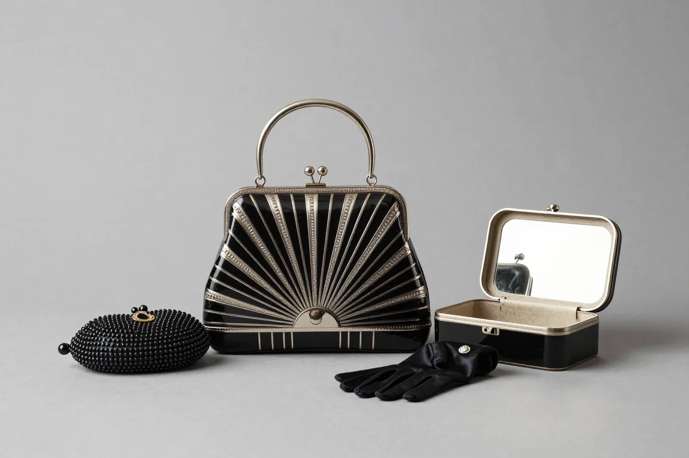

Маленькие твёрдые яркие аксессуары вечернего костюма между войнами. Эмалевые и гравированные футляры, миноделье, бисерные атласные кошельки и длинные лайковые перчатки в геометрических формах чёрного, серебряного и цвета драгоценного камня.

Главная идея
Вечерний аксессуар — украшение, в котором лежит пудреница, и его геометрия выдаёт современный вкус.
Принципы дизайна
Режьте форму чистой геометрией: прямоугольник, круг или ступенчатый край.
Держите футляр небольшим, шириной 12–20 см, чтобы рука несла его как украшение.
Задавайте смелый контраст: чёрная эмаль с серебром или нефритово-зелёный с золотом.
Оснащайте внутренность зеркалом, пудреницей и держателем для помады.
Повторяйте угловые мотивы рядами: солнечные лучи, шеврон или ступенчатая линия.
Завершайте застёжку рядом мелких камней или эмалевой планкой.
Берите цепочку или шнур 20–40 см, чтобы футляр носили в руке или на запястье.
Сочетайте футляр с длинными лайковыми перчатками и атласным платьем.